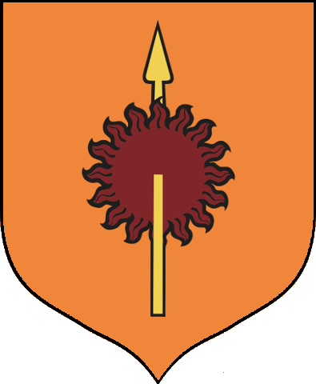

Game of Thrones is an American fantasy drama television series created by David Benioff and D. B. Weiss. It is an adaptation of A Song of Ice and Fire, George R. R. Martin's series of fantasy novels, the first of which is 'A Game of Thrones'!!!
Game of Thrones is an American fantasy drama television series created by David Benioff and D. B. Weiss. It is an adaptation of A Song of Ice and Fire, George R. R. Martin's series of fantasy novels, the first of which is 'A Game of Thrones'!!!
| Kingdom | Lords | Symbol |
|---|---|---|
| The North | Stark of Winterfell |  |
| Kingdom of the Isles and Rivers | Harren Hoare |  |
| The Vale | Arryn of the Eyrie | |
| The Westernlands | Lannister of Casterly Rock |  |
| The Stormlands | Baratheon of Storm's End |  |
| The Riverlands | Tully of Riverrun |  |
| Dorne | Martell of Sunspear |  |
Dedicated to all Game of Thrones® fans